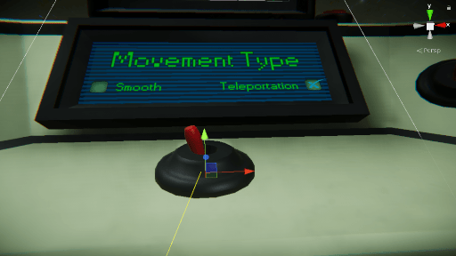
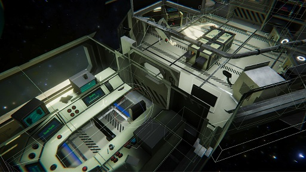

My role: Programmer.
My contribution:
- ProgressionSystem & AudioSystem
- Cockpit/Worldspace Menu & Options
- FreeMovement restrictions
- Overall VR testing
On this page I'll explain how the following Systems work:
-
WorldspaceUI & Options
What I did with the UI and how the options work with VR.
-
FreeMovement Restrictions
The restrictions I added to the already existing player movement.
Restricting the player from moving into walls and other big objects.
Apex is supposed to be a linear Virtual Reality escape room.
The idea of the assignment was to make a Virtual Reality escape room with Professor Layton
difficulty puzzles.
We decided to make it a Space theme where you play as a test monkey on a space ship and you
needed to get to an escape pod.
Because of distractions making the game, testing puzzle ideas and vr related things we put less
time in the escape room feeling.
The game ended up being more of a puzzle room than an escape room.
Other requirements that we had to put in for the assignment was that the player could not die or
lose to a timer.
We did decide to add a count up timer to keep track of how long the player was playing for.
In the end the game became a pretty fun Virtual Reality puzzle room experience in a decent
looking Space setting.

All worldspace UI in the scene uses a shader.
I edited some values of the shader to make it have a oldTech feeling like in alien isolation.
The UI I made shows the settings of the game.
These settings are: Sound, Graphics and movement type.
Besides this there is also a reset button, switch hands button and a hints screen.
The options are controlled by buttons for the reset, switch hand and movement type options, A
handle for the Quality options and a slider for the Sound.
The movement switch switches between teleportation and free movement.
The reset button resets the scene in case the player want to start over.
The Quality handel rotates between a minimum and maximum distance and uses a vector3.distance to
check how far along it is.
From there it checks what quality setting it should be on.
The Sound slider does pretty much the same thing as the Quality handel, accept that it uses its
local position with the distance to calculate the sound value.
All sound and quality settings give their values to the SettingsManager, which then changes the
actual values to those given by the individual sliders and handels.
public void Touching(bool b)
{
touched = b;
if(b == false)
{
ChangeQuality();
}
}
public void MovingHandel()
{
if(touched)
{
float handelValue;
handelValue = Vector3.Distance(handelMin, transform.position);
qualitySlider.value = maxMovement - handelValue;
if(handelValue >= lastStep + resultStep)
{
lastStep += resultStep;
qualityIndex -= 1;
}
if(handelValue <= lastStep - resultStep)
{
lastStep -= resultStep;
qualityIndex += 1;
}
if(handelValue >= 0.39f && qualityIndex == 1)
{
lastStep += resultStep;
qualityIndex -= 1;
}
if(handelValue <= 0.01f && qualityIndex == 4)
{
lastStep -= resultStep;
qualityIndex += 1;
}
}
}
public void ChangeQuality()
{
SettingsManager.instance.ChangeQuality(qualityIndex);
}

The Free Movement Restrictions use the VR movement system made before the project by our
lead developer.
It restricts The free movement stopping the player from moving into a big object like a table.
It does this by shooting a raycast towards the ground from the next position of your VR goggles.
If it hits one of the colliders setup in the walls and static big objects in the scene, the
player wont move.
When this is not detected the player will move towards the direction.
If a otherwise static object moves because of an animation, the collider instead of being put in
the main group of colliders is placed on the object.
This is done so that it moves with the object and properly stops movement on its new position.
if (!Physics.Raycast(newPos,Vector3.down,out hit, 25, moveDetectionLayerMask))
{
VRPlayerMovementManager.instance.cameraRigTransform.transform.position += nextPos;
// Lerp.
//Vector3 newValidPos = VRPlayerMovementManager.instance.cameraRigTransform.position + nextPos;
//VRPlayerMovementManager.instance.cameraRigTransform.position = Vector3.Lerp(VRPlayerMovementManager.instance.cameraRigTransform.position, newValidPos, Time.deltaTime);
}
#region OldTagMethod
//if (Physics.Raycast(newPos, Vector3.down, out hit))
//{
// if (hit.transform.tag != "CantMove")
// {
// VRPlayerMovementManager.instance.cameraRigTransform.transform.position += nextPos;
// }
//}
#endregion